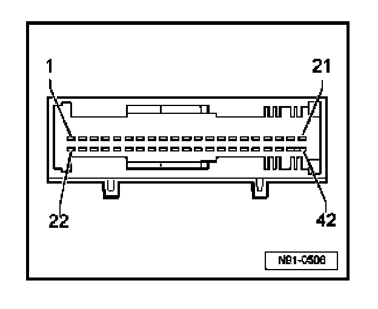

Connector Views
Telematics Control Module -J499- Multipin Connector Assignments
42 pin multi-connector -T42-

1. Signal activation -Dual Horn Auxiliary Relay
2. Signal activation -"lock vehicle"
3. Cellular telephone connection -Audio in (not used)
4. Cellular telephone connection -Battery Feedback (not used)
5. Cellular telephone connection -Ground (GND)
6. Cellular telephone connection -TXD-transfer (not used)
7. Cellular telephone connection -RTS (not used)
8. Cellular telephone connection -shielding Ground (GND) (not used)
9. CAN Bus -High
10. Line (+) Output to radio
11. Auxiliary speaker (+) (not used)
12. Telephone microphone (+)
13. K-wire, Data Link Connector (DLC)
14. Power supply -Terminal 15
15. Telematics indicator LED "red" (in Telematics Control Head)
16. Telematics indicator LED "green" (in Telematics Control Head)
17. not used
18. Ground (GND) (Terminal 31)
19. Ground (GND) (Terminal 31)
20. - not used
21. not used
22. Signal activation -Auxiliary Emergency Flasher Relay
23. Signal activation -"unlock vehicle"
24. Cellular telephone connection Audio out (not used)
25. Cellular telephone connection -Audio Ground (GND) (not used)
26. Cellular telephone connection -power supply (not used)
27. Cellular telephone connection -RXD (not used)
28. Cellular telephone connection -RTS (not used)
29. Signal status -Telephone (not used)
30. CAN Bus -Low
31. Line (-) Output to radio
32. Auxiliary speaker (-) (not used)
33. Telephone microphone (-)
34. Mute -Radio
35. Input "SOS" from Telematics control head
36. Input "Power" from Telematics control head
37. (not used)
38. Crash-Signal from airbag control module
39. Terminal 30 (B+)
40. Terminal 30 (B+)
41. Emergency (backup) battery (+) (not used)
42. Emergency (backup) battery (-) (not used)